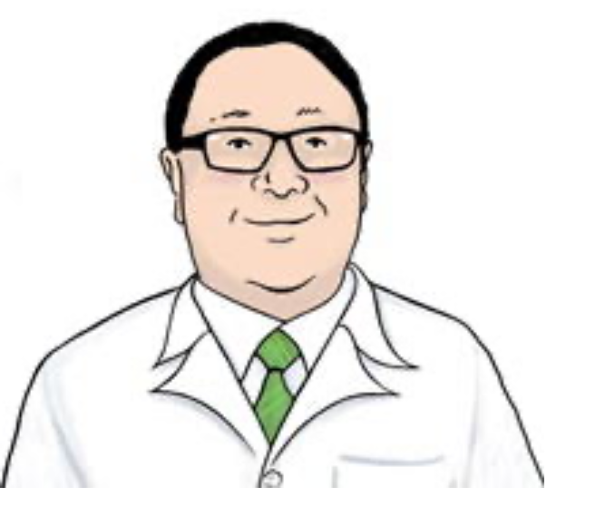

01 / EDUCATION
医学への道。
1976年、愛知県名古屋市名東区生まれ。愛知県立旭丘高校、金沢大学医学部を卒業。
院長紹介・クリニック案内
柴田屋整形外科

※ごあいさつは既存の公式掲載文をもとに読みやすく再構成した試作文章です。正式公開前に院長による確認をお願いします。
1976年、愛知県名古屋市名東区生まれ。愛知県立旭丘高校、金沢大学医学部を卒業。
済生会高岡病院、富山県立中央病院、舞鶴共済病院、加賀市民病院、金沢大学附属病院、金沢西病院、友仁山崎病院などで診療。
専門分野は膝や足などの関節疾患、スポーツ整形外科。
地域に根ざし、整形外科診療とリハビリテーションを通じて、日々の暮らしやスポーツ活動を支えることを目指しています。
※資格名称は既存の公式掲載表記です。現在の正式名称・資格状況は公開前に確認します。